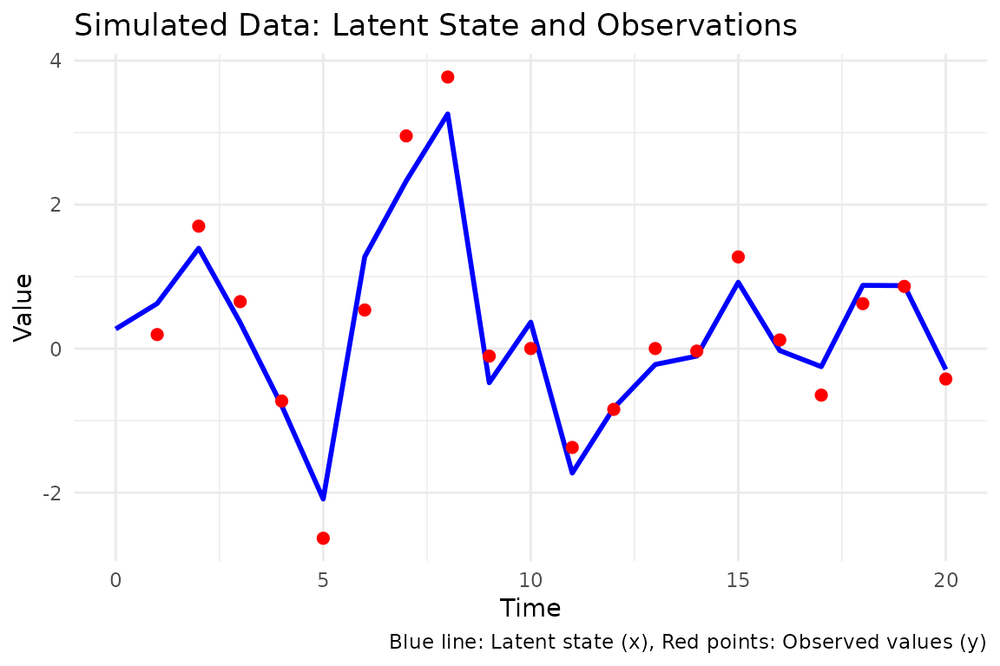
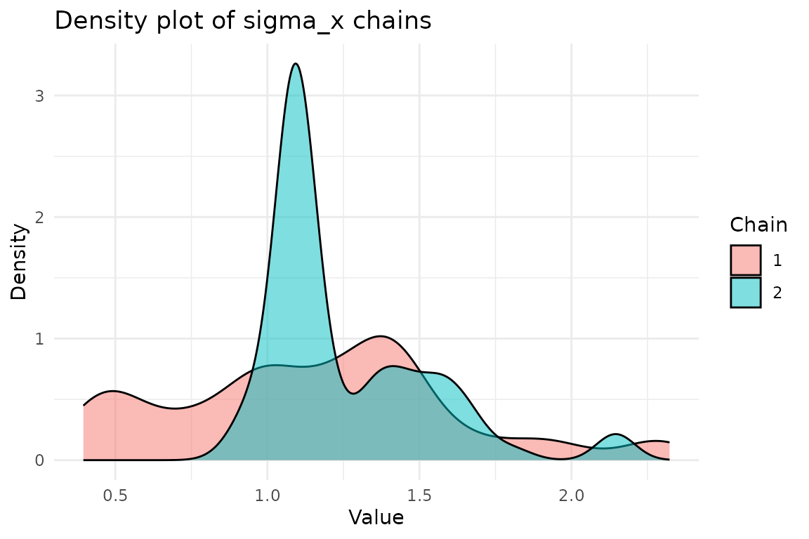

We will show how to fit the following SSM model using the
bayesSSM package:
that is is a latent state and is an observed value. The parameters of the model are , , and .
First, we will simulate some data from this model:
set.seed(1405)
t_val <- 50
phi_true <- 0.8
sigma_x_true <- 1
sigma_y_true <- 0.5
x <- numeric(t_val)
y <- numeric(t_val)
x[1] <- rnorm(1)
y[1] <- x[1] + sigma_y_true * rnorm(1)
for (t in 2:t_val) {
x[t] <- phi_true * x[t - 1] + sin(x[t - 1]) + sigma_x_true * rnorm(1)
y[t] <- x[t] + sigma_y_true * rnorm(1)
}Let’s visualize the data:
ggplot() +
geom_line(aes(x = 1:t_val, y = x), color = "blue", linewidth = 1) + # Latent
geom_point(aes(x = 1:t_val, y = y), color = "red", size = 2) + # Observed
labs(
title = "Simulated Data: Latent State and Observations",
x = "Time",
y = "Value",
caption = "Blue line: Latent state (x), Red points: Observed values (y)"
) +
theme_minimal()
To fit the model using pmmh we need to specify the
likelihood initialization, transition, and log-likelihood functions.
It’s important that they all take an argument particles,
which is a vector of particles, and that the log-likelihood function
takes an argument
for the data.
init_fn <- function(particles) {
rnorm(particles, mean = 0, sd = 1)
}
transition_fn <- function(particles, phi, sigma_x) {
phi * particles + sin(particles) +
rnorm(length(particles), mean = 0, sd = sigma_x)
}
log_likelihood_fn <- function(y, particles, sigma_y) {
dnorm(y, mean = particles, sd = sigma_y, log = TRUE)
}Since we are interested in bayesian inference, we need to specify the
priors for our parameters. We will use a normal prior for
and exponential priors for
and
.
pmmh needs the priors to be specified on the
-scale
and takes the priors as a list of functions.
log_prior_phi <- function(phi) {
dnorm(phi, mean = 0, sd = 1, log = TRUE)
}
log_prior_sigma_x <- function(sigma) {
dexp(sigma, rate = 1, log = TRUE)
}
log_prior_sigma_y <- function(sigma) {
dexp(sigma, rate = 1, log = TRUE)
}
log_priors <- list(
phi = log_prior_phi,
sigma_x = log_prior_sigma_x,
sigma_y = log_prior_sigma_y
)The pmmh function automatically tunes the number of
particles and proposal distribution for the parameters. The tuning can
be modified by the the function default_tune_control. We
will use the default settings.
We fit 2 chains with iterations for each, with a burn_in of . In practice you should run more iterations and chains. To improve sampling we specify that metropolis hastings should specify and on the -scale.
result <- pmmh(
y = y,
m = 2000,
init_fn = init_fn,
transition_fn = transition_fn,
log_likelihood_fn = log_likelihood_fn,
log_priors = log_priors,
init_params = c(phi = 0.5, sigma_x = 0.5, sigma_y = 0.5),
burn_in = 500,
num_chains = 2,
seed = 1405,
param_transform = list(
phi = "identity",
sigma_x = "log",
sigma_y = "log"
),
verbose = TRUE
)
#> Running chain 1...
#> Running pilot chain for tuning...
#> Pilot chain posterior mean:
#> phi sigma_x sigma_y
#> 0.8005451 0.9537540 0.5064611
#> Pilot chain posterior covariance (on transformed space):
#> phi sigma_x sigma_y
#> phi 0.0058552558 0.0003053249 -0.0007840488
#> sigma_x 0.0003053249 0.0275213462 -0.0181919200
#> sigma_y -0.0007840488 -0.0181919200 0.0383626437
#> Using 162 particles for PMMH:
#> Running particle MCMC chains with tuned settings...
#> Running chain 2...
#> Running pilot chain for tuning...
#> Pilot chain posterior mean:
#> phi sigma_x sigma_y
#> 0.8581103 0.9046562 0.4931635
#> Pilot chain posterior covariance (on transformed space):
#> phi sigma_x sigma_y
#> phi 0.004403170 0.001810673 -0.001616241
#> sigma_x 0.001810673 0.027308578 -0.013894656
#> sigma_y -0.001616241 -0.013894656 0.030341556
#> Using 141 particles for PMMH:
#> Running particle MCMC chains with tuned settings...
#> PMMH Results Summary:
#> Parameter Mean SD Median CI.2.5% CI.97.5% ESS Rhat
#> phi 0.84 0.06 0.83 0.73 0.94 35 1.002
#> sigma_x 0.99 0.18 0.98 0.66 1.27 2 1.006
#> sigma_y 0.32 0.23 0.31 0.05 0.74 1 1.011
#> Warning in pmmh(y = y, m = 2000, init_fn = init_fn, transition_fn =
#> transition_fn, : Some ESS values are below 400, indicating poor mixing.
#> Consider running the chains for more iterations.
#> Warning in pmmh(y = y, m = 2000, init_fn = init_fn, transition_fn =
#> transition_fn, : Some Rhat values are above 1.01, indicating that the chains
#> have not converged. Consider running the chains for more iterations and/or
#> increase burn_in.We see that the chains gives convergence issues, indicating that we should run it for more iterations, but we ignore this issue in this Vignette.
It automatically prints data frame summarizing the results, which can
be printed from any pmmh_output object by calling
print.
print(result)
#> PMMH Results Summary:
#> Parameter Mean SD Median CI.2.5% CI.97.5% ESS Rhat
#> phi 0.84 0.06 0.83 0.73 0.94 35 1.002
#> sigma_x 0.99 0.18 0.98 0.66 1.27 2 1.006
#> sigma_y 0.32 0.23 0.31 0.05 0.74 1 1.011The chains are saved as theta_chain
chains <- result$theta_chain
chain_1 <- chains[[1]]
chain_2 <- chains[[2]]Let’s collect the chains for phi from the chains and visualize the densities
phi_chains <- cbind(
chain_1$phi, chain_2$phi
)
ggplot2::ggplot() +
geom_density(aes(x = phi_chains[, 1]), fill = "blue", alpha = 0.5) +
geom_density(aes(x = phi_chains[, 2]), fill = "red", alpha = 0.5) +
labs(
title = "Density plot of phi chains",
x = "Value",
y = "Density",
caption = "Blue: Chain 1, Red: Chain 2"
) +
theme_minimal()
We have now fitted a simple SSM model using bayesSSM.
Feel free to explore the package further and try out different
models.